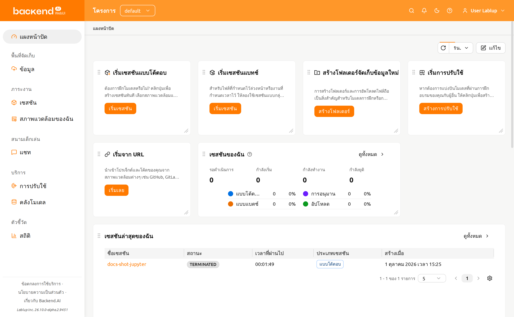
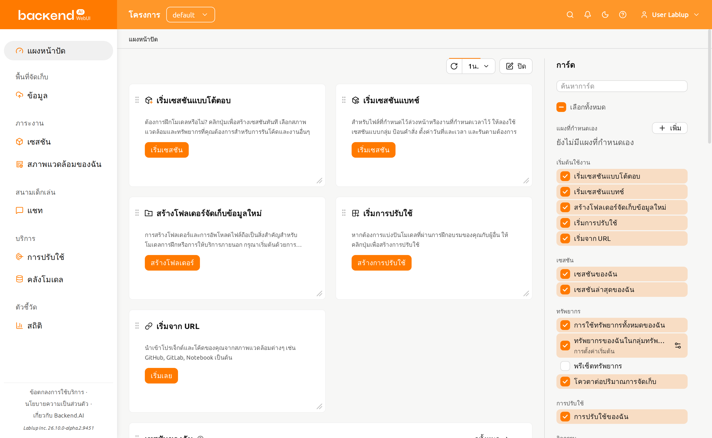
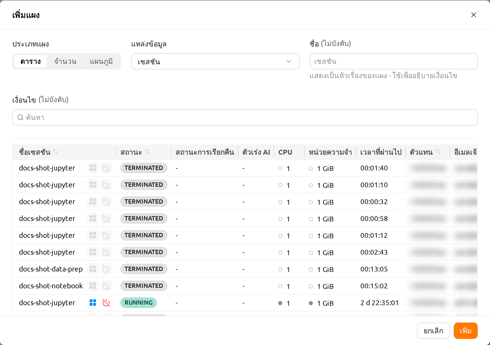
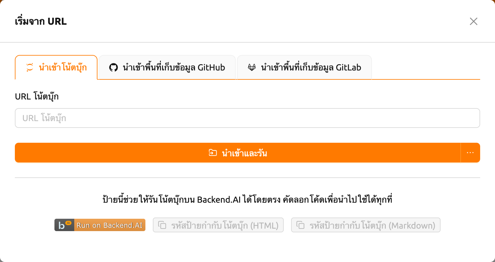
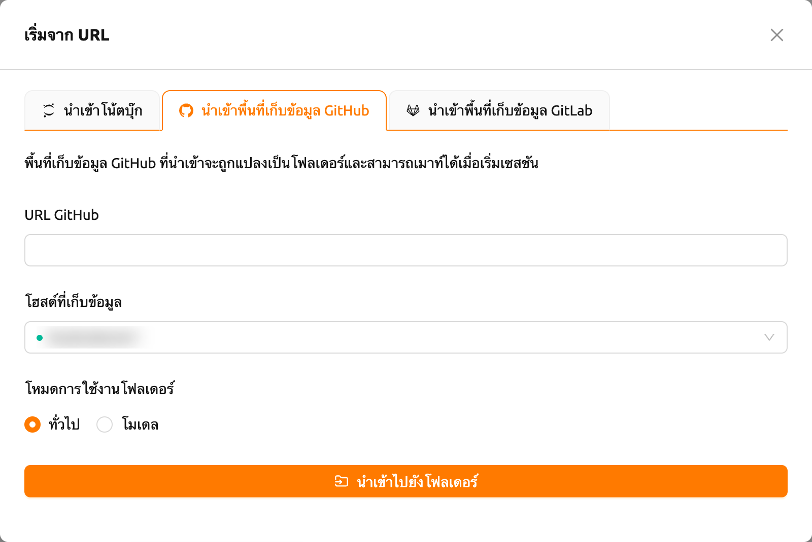
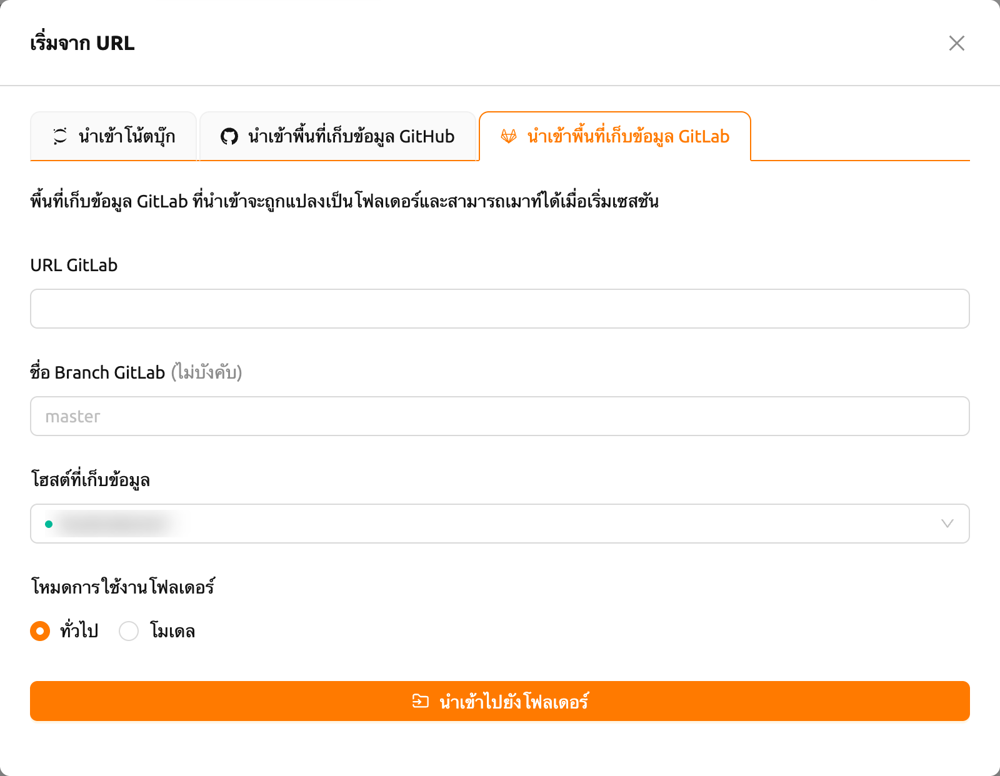
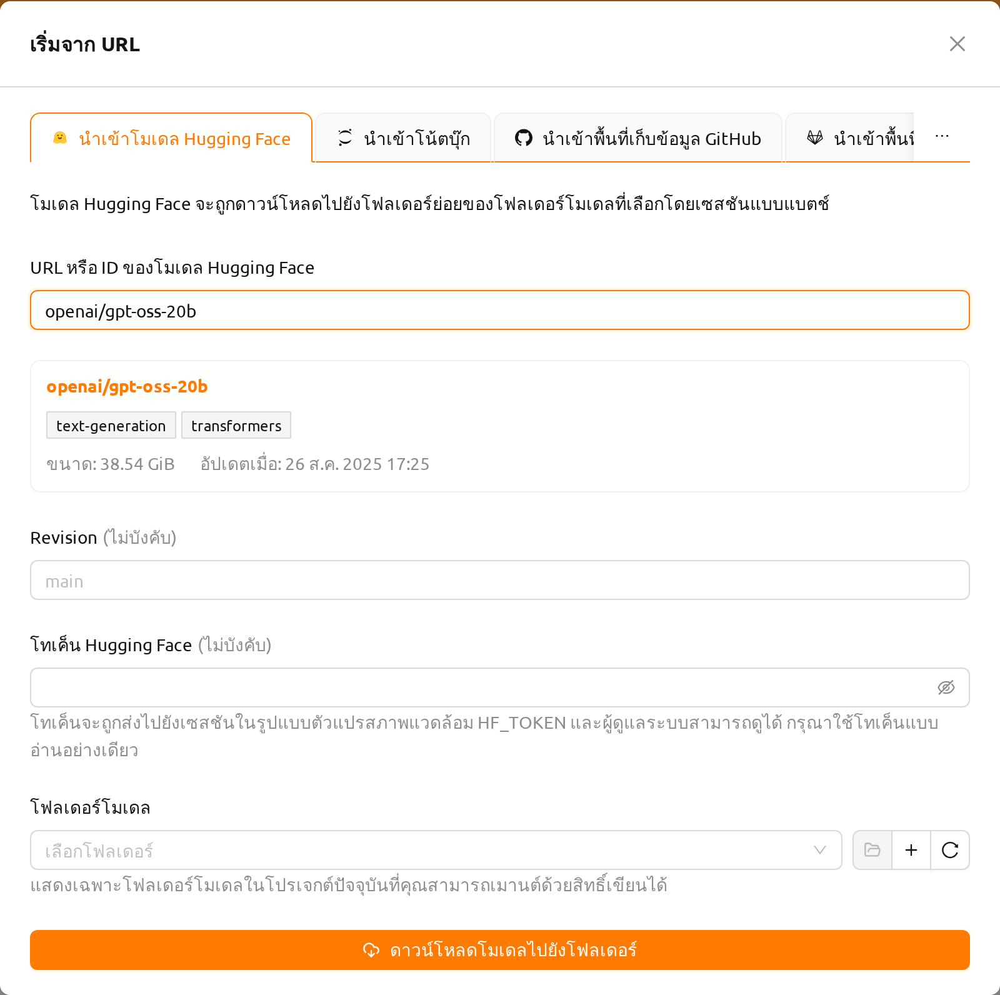

แดชบอร์ด#
แดชบอร์ด คือหน้าแรกที่คุณเห็นหลังจากเข้าสู่ระบบ ประกอบด้วยการ์ดหลายใบ การ์ดที่อยู่ด้านบนเป็นทางลัดไปยังงานที่คุณมักเริ่มทำเป็นอย่างแรก การ์ดแต่ละใบมีชื่องาน คำอธิบายสั้น ๆ และปุ่มสำหรับเริ่มงานนั้น
เริ่มเซสชันแบบโต้ตอบ: คลิก เริ่มเซสชัน เพื่อเปิดตัวเปิดเซสชัน ซึ่งคุณเลือกสภาพแวดล้อมและทรัพยากร แล้วรันโค้ดแบบโต้ตอบได้
เริ่มเซสชันแบทช์: คลิก เริ่มเซสชัน เพื่อเปิดตัวเปิดเซสชันโดยตั้งประเภทเซสชันเป็นแบทช์ ใช้สำหรับคำสั่งที่รันจนจบได้เองโดยอัตโนมัติ
สร้างโฟลเดอร์จัดเก็บข้อมูลใหม่: คลิก สร้างโฟลเดอร์ เพื่อสร้างโฟลเดอร์จัดเก็บข้อมูลสำหรับไฟล์และข้อมูลที่เซสชันของคุณใช้
เริ่มการปรับใช้: คลิก สร้างการปรับใช้ เพื่อให้บริการโมเดลที่ฝึกแล้วให้ผู้อื่นใช้งานได้
เริ่มจาก URL: คลิก เริ่มเลย เพื่อนำเข้า Jupyter notebook, ที่เก็บ GitHub หรือ GitLab หรือโมเดล Hugging Face จาก URL โน้ตบุ๊กจะเปิดในเซสชันใหม่ ส่วนที่เก็บและโมเดลจะถูกบันทึกลงในโฟลเดอร์จัดเก็บข้อมูล ดูวิธีใช้แต่ละแหล่งนำเข้าได้ที่ เริ่มจาก URL
ขึ้นอยู่กับการตั้งค่าเซิร์ฟเวอร์ การ์ดบางส่วน เช่น การ์ดการปรับใช้ อาจไม่ สามารถใช้งานได้ หากคุณต้องการใช้ฟีเจอร์เหล่านี้ กรุณาติดต่อผู้ดูแลระบบ

การ์ดด้านล่างจะสรุปเซสชัน การใช้ทรัพยากร และกิจกรรมล่าสุดของคุณในโปรเจกต์ปัจจุบัน:
เซสชันของฉัน: แสดงเซสชันของคุณในโปรเจกต์ปัจจุบันตามสถานะ และแสดงเซสชันที่ใช้งานอยู่ตามประเภท เช่น Interactive, Batch, Inference และ Upload
เซสชันล่าสุดของฉัน: แสดงรายการเซสชันที่คุณสร้างล่าสุด เรียงจากใหม่ไปเก่า
การใช้ทรัพยากรทั้งหมดของฉัน: แสดงทรัพยากรที่เซสชันของคุณใช้อยู่ในทุกกลุ่มทรัพยากรและทุกโปรเจกต์ เมื่อมีขีดจำกัดหลายรายการ (โดเมน โปรเจกต์ หรือคีย์แพร์) ระบบจะใช้ขีดจำกัดที่เข้มงวดที่สุด
ทรัพยากรของฉันในกลุ่มทรัพยากร: แสดงทรัพยากรที่ใช้ไปและที่ยังว่างอยู่ในกลุ่มทรัพยากรที่ตั้งไว้ของการ์ด
ทรัพยากรทั้งหมดในกลุ่มทรัพยากร: สรุปทรัพยากรที่ใช้แล้วและว่างของกลุ่มทรัพยากรที่ตั้งไว้ของการ์ด ข้อมูลรวบรวมจากเอเจนต์ทั้งหมดที่อยู่ในกลุ่ม
สถิติตัวแทน: แสดงทรัพยากรทั้งหมดของเอเจนต์ทุกตัวในระบบ
โควตาต่อปริมาณการจัดเก็บ: แสดงโควตาที่ใช้งานได้ในแต่ละปริมาณการจัดเก็บ หากไม่มีโฮสต์จัดเก็บใดรองรับโควตา การ์ดนี้จะแสดงข้อความแจ้งแทน
การปรับใช้ของฉัน: แสดงรายการการปรับใช้โมเดลของคุณพร้อมสถานะของเรพลิกา
กิจกรรมของฉัน: แสดงรายการบันทึกการตรวจสอบของคุณเองในช่วงเวลาที่ตั้งไว้ของการ์ด
การ์ด ทรัพยากรทั้งหมดในกลุ่มทรัพยากร และ สถิติตัวแทน อาจไม่แสดงขึ้นอยู่กับการกำหนดค่าระบบ
ผู้ดูแลโปรเจกต์และผู้ดูแลระบบระดับสูงจะมี แดชบอร์ด ของตนเองในเมนูผู้ดูแลระบบ ซึ่งแสดงการ์ดสำหรับโปรเจกต์หรือสำหรับทั้งคลัสเตอร์
การปรับแต่งเลย์เอาท์แดชบอร์ด#
คุณสามารถจัดเรียงบอร์ดใหม่ได้ตลอดเวลา โดยไม่ต้องเข้าสู่โหมดใดก่อน:
- ย้ายการ์ด: ลากส่วนหัวของการ์ดเพื่อเปลี่ยนตำแหน่งบนบอร์ด
- ปรับขนาดการ์ด: ลากมุมขวาล่างของการ์ดเพื่อปรับขนาด แต่ละการ์ดมีขนาดขั้นต่ำเพื่อให้เนื้อหาอ่านได้ง่าย
คลิกปุ่ม แก้ไข เพื่อเปิดแถบด้านข้างสำหรับแก้ไข และคลิก ปิด เพื่อซ่อนอีกครั้ง แถบด้านข้างจะแสดงการ์ดทั้งหมดที่หน้านี้มีให้ จัดกลุ่มตามหัวข้อ เลือกการ์ดเพื่อเพิ่มลงบนบอร์ด และยกเลิกการเลือกเพื่อนำออกจากบอร์ด

การจัดวางของคุณจะถูกบันทึกไว้กับบัญชีของคุณบนเซิร์ฟเวอร์ จึงใช้ได้เหมือนกันในทุกเบราว์เซอร์ที่คุณเข้าสู่ระบบ หากต้องการกลับไปใช้การ์ดและการจัดเรียงเริ่มต้น ให้คลิกปุ่ม รีเซ็ตการจัดวาง ที่ด้านล่างของแถบด้านข้างสำหรับแก้ไข แล้วยืนยัน การรีเซ็ตการจัดวางจะไม่ลบแผงที่กำหนดเองของคุณ
เมื่อ WebUI ได้รับการอัปเดตพร้อมการ์ดแดชบอร์ดใหม่ การ์ดเหล่านั้นจะปรากฏบนแดชบอร์ด ของคุณโดยอัตโนมัติ แม้ว่าคุณจะมีการจัดวางที่บันทึกไว้แล้วก็ตาม
การตั้งค่าเริ่มต้นของการ์ด#
การ์ดที่ใช้กลุ่มทรัพยากรหรือช่วงเวลาสามารถบันทึกค่าเริ่มต้นไว้ได้ เปิด การตั้งค่าเริ่มต้นของการ์ด ของการ์ดนั้นในแถบด้านข้างสำหรับแก้ไข เพื่อกำหนดค่าที่จะใช้เมื่อเปิดบอร์ด ส่วนค่าที่เปลี่ยนจากตัวเลือกในส่วนหัวของการ์ดจะมีผลเฉพาะระหว่างที่คุณกำลังดูอยู่เท่านั้น
แผงที่กำหนดเอง#
แถบด้านข้างสำหรับแก้ไขยังแสดงรายการแผงที่กำหนดเองของคุณด้วย แผงที่กำหนดเองจะแสดงแหล่งข้อมูลที่คุณเลือก ซึ่งถูกกรองด้วยเงื่อนไขที่คุณกำหนด ตัวแผงจะแสดงเฉพาะชื่อและข้อมูลเท่านั้น จึงควรตั้งชื่อแผงให้สื่อถึงเงื่อนไขที่ใช้
หากต้องการเพิ่มแผง ให้คลิกปุ่ม เพิ่ม ในแถบด้านข้าง กล่องโต้ตอบของแผงประกอบด้วยฟิลด์ต่อไปนี้ ประเภทแผง และ แหล่งข้อมูล เป็นฟิลด์ที่จำเป็น ต้องเลือกทั้งสองอย่างจึงจะส่งกล่องโต้ตอบได้:
- แหล่งข้อมูล: แหล่งข้อมูลที่จะแสดงในแผง เลือกได้จาก เซสชัน, การปรับใช้ หรือ ข้อมูลและการจัดเก็บ
- ประเภทแผง: วิธีแสดงผลแหล่งข้อมูลของแผง เลือกได้จาก ตาราง, จำนวน หรือ แผนภูมิ และหากเลือกแหล่งข้อมูล เซสชัน จะมีตัวเลือก กริด เพิ่มขึ้นมาด้วย
- ชื่อ: ชื่อของแผง (ไม่บังคับ) หากไม่ระบุ ระบบจะใช้ชื่อแหล่งข้อมูลแทน
- เงื่อนไข: ตัวกรองคุณสมบัติที่ใช้จำกัดรายการที่แสดงในแผง
ตัวอย่างแบบเรียลไทม์ด้านล่างฟิลด์จะแสดงแถวที่ตรงกับเงื่อนไขปัจจุบัน การเรียงลำดับคอลัมน์ในตัวอย่างจะกำหนดลำดับการเรียงของแผง คลิก เพิ่ม เพื่อวางแผงบนบอร์ด

แผง การปรับใช้ จะแสดงรายการการปรับใช้โมเดลของโปรเจกต์ โดยใช้ตารางเดียวกับหน้าการปรับใช้ ได้แก่ ชื่อ สถานะ สรุปเรพลิกา โมเดล และวันที่สร้าง การคลิกชื่อการปรับใช้จะเปิดหน้ารายละเอียดของการปรับใช้นั้น
เมื่อเลือก แผนภูมิ ระบบจะแสดงรายการที่ตรงกับเงื่อนไขเป็นแผนภูมิ ประเภทแผนภูมิในกลุ่ม เปรียบเทียบกลุ่ม (โดนัท วงกลม แท่ง เรดาร์) จะนับรายการโดยจัดกลุ่มตามคุณสมบัติที่เลือกไว้ใน จัดกลุ่มตาม ส่วนประเภทแผนภูมิในกลุ่ม การสร้างตามช่วงเวลา (เส้น พื้นที่ คอลัมน์) จะนับรายการที่สร้างขึ้นในแต่ละช่วงของระยะเวลาที่เลือก เปิด แสดงตาราง เพื่อแสดงแถวที่ตรงกับเงื่อนไขไว้ใต้แผนภูมิบนแผง
เมื่อเลือก กริด จะแสดงกริดทรัพยากรของเซสชัน โดยแสดงทรัพยากรที่จัดสรรให้แต่ละเซสชันที่ตรงกับเงื่อนไขเป็นหน่วยเซลล์ ซึ่งมีสีตามระดับการใช้งาน การคลิกที่เซสชันจะเปิดแผงรายละเอียดของเซสชันนั้น เช่นเดียวกับการคลิกแถวในตาราง กริดจะแสดงเซสชันที่ตรงกับเงื่อนไขสูงสุด 100 รายการแรกเท่านั้น และจะมีข้อความแจ้งเตือนเมื่อมีมากกว่านั้น
การตั้งค่าการแสดงผลของกริด (โหมดทรัพยากร/เคอร์เนล ทรัพยากรหรือเมตริกที่จะแสดง หน่วยหน่วยความจำ และรูปแบบการจัดวาง) จะกำหนดในตัวอย่างแบบเรียลไทม์ของกล่องโต้ตอบเพิ่ม/แก้ไขแผง และจะถูกบันทึกไว้พร้อมกับแผง ตัวแผงเองไม่มีตัวควบคุมสำหรับการตั้งค่าเหล่านี้ ดังนั้นหากต้องการมุมมองอื่น ให้สร้างแผงเพิ่มอีกหนึ่งแผง
กริด เป็นฟีเจอร์ทดลอง โดยจะปรากฏในตัวเลือก ประเภทแผง ก็ต่อเมื่อเปิดใช้งาน Session resource grid view ในคุณสมบัติการทดลอง หากปิดการตั้งค่านี้ในภายหลัง แผง กริด ที่มีอยู่แล้วจะยังคงการตั้งค่าที่บันทึกไว้ แต่จะแสดงผลเป็นตารางเซสชันจนกว่าจะเปิดการตั้งค่านี้อีกครั้ง
หากต้องการเปลี่ยนแหล่งข้อมูล ประเภทแผง เงื่อนไข หรือชื่อของแผงในภายหลัง ให้คลิกไอคอนดินสอ (แก้ไข) ข้างแผงในแถบด้านข้าง หรือที่ส่วนหัวของแผงบนบอร์ด แล้วบันทึกการเปลี่ยนแปลง หากต้องการลบแผง ให้คลิกไอคอนถังขยะ (ลบ) แล้วยืนยันในป๊อปอัป
แผง เซสชัน และ การปรับใช้ แสดงข้อมูลของโปรเจกต์ปัจจุบันและใช้งานได้กับสมาชิกโปรเจกต์ทุกคน แผง ข้อมูลและการจัดเก็บ ใช้งานได้เฉพาะผู้ดูแลระบบระดับสูงเท่านั้น แผงของแหล่งข้อมูลที่สิทธิ์ปัจจุบันของคุณไม่สามารถเข้าถึงได้จะยังคงอยู่ในรายการของแถบด้านข้าง แต่จะไม่แสดงบนบอร์ด
การรีเฟรชอัตโนมัติ#
ตัวควบคุมการรีเฟรชบนแถบแดชบอร์ดใช้กำหนดความถี่ในการรีเฟรชของทุกการ์ด เลือกได้ทั้ง ปิด หรือช่วงเวลาตั้งแต่ 5 วินาทีถึง 10 นาที และเมื่อคลิกตัวควบคุมนี้ ทุกการ์ดจะรีเฟรชพร้อมกันทันที
เริ่มจาก URL#
การ์ด เริ่มจาก URL บนแดชบอร์ดช่วยให้คุณนำเข้าโน้ตบุ๊ก ที่เก็บ หรือโมเดล จากแหล่งภายนอกได้ คลิก เริ่มเลย บนการ์ดเพื่อเปิดกล่องโต้ตอบที่มีแท็บสำหรับแต่ละแหล่งนำเข้า ได้แก่ นำเข้าโน้ตบุ๊ก, นำเข้าพื้นที่เก็บข้อมูล GitHub และ นำเข้าพื้นที่เก็บข้อมูล GitLab เมื่อเปิดใช้งานการนำเข้าจาก Hugging Face ซึ่งเป็นฟีเจอร์ทดลอง จะมีแท็บ นำเข้าโมเดล Hugging Face เพิ่มขึ้นมา
นำเข้าโน้ตบุ๊ก#

ป้อน URL ของ Jupyter Notebook (ต้องลงท้ายด้วย
.ipynb) ในฟิลด์ URL โน้ตบุ๊กคลิก นำเข้าและรัน เพื่อสร้างเซสชันอัตโนมัติและเปิดโน้ตบุ๊กใน Jupyter
คุณยังสามารถคลิกลูกศรดรอปดาวน์ข้างปุ่มและเลือก เริ่มด้วยตัวเลือก เพื่อปรับแต่งสภาพแวดล้อมเซสชันก่อนเริ่มต้น
โน้ตบุ๊กจะถูกดาวน์โหลดจากภายในเซสชันการคำนวณ (สคริปต์บูตสแตรปจะรันคำสั่ง
curl -O <url>) ดังนั้น URL ที่ป้อนต้องเข้าถึงได้จากเซสชันการคำนวณ ที่อยู่ภายในเครื่อง
เช่น localhost หรือ 127.0.0.1 จะชี้ไปยังคอนเทนเนอร์ของเซสชันเอง ไม่ใช่เครื่องของคุณ
จึงใช้งานไม่ได้ กรุณาป้อน URL ที่เข้าถึงได้จากเซสชันการคำนวณ
ปิดตัวบล็อกป๊อปอัพของเบราว์เซอร์เพื่อให้หน้าต่างโน้ตบุ๊กที่กำลังทำงานเปิดขึ้น โดยอัตโนมัติ หากไม่มีทรัพยากรเพียงพอในการเริ่มเซสชัน โน้ตบุ๊กที่นำเข้าจะไม่ทำงาน
ที่ด้านล่างของแท็บ คุณสามารถสร้างโค้ดป้าย "Run on Backend.AI" ได้ คัดลอก โค้ดป้าย HTML หรือ Markdown เพื่อฝังลิงก์เปิดใช้งานโดยตรงในเอกสารโปรเจกต์
คุณต้องเข้าสู่ระบบก่อนสร้างโค้ดป้าย มิฉะนั้น กรุณาเข้าสู่ระบบก่อนแล้วลองอีกครั้ง
นำเข้าพื้นที่เก็บข้อมูล GitHub#

- ป้อน URL พื้นที่เก็บข้อมูล GitHub ที่ถูกต้องในฟิลด์ URL GitHub
- เลือก โฮสต์ที่เก็บข้อมูล ที่จะบันทึกพื้นที่เก็บข้อมูล
- ตั้งค่า โหมดการใช้งานโฟลเดอร์ (ทั่วไปหรือโมเดล) ตามต้องการ
- คลิก นำเข้าไปยังโฟลเดอร์ เพื่อโคลนพื้นที่เก็บข้อมูลไปยังโฟลเดอร์ จัดเก็บใหม่
พื้นที่เก็บข้อมูลที่นำเข้าจะถูกแปลงเป็นโฟลเดอร์จัดเก็บและสามารถเมาท์ได้ เมื่อเริ่มเซสชัน
นำเข้าพื้นที่เก็บข้อมูล GitLab#

- ป้อน URL พื้นที่เก็บข้อมูล GitLab ที่ถูกต้องในฟิลด์ URL GitLab
- ระบุ ชื่อ Branch GitLab ตามต้องการ (ค่าเริ่มต้น:
master) - เลือก โฮสต์ที่เก็บข้อมูล ที่จะบันทึกพื้นที่เก็บข้อมูล
- ตั้งค่า โหมดการใช้งานโฟลเดอร์ (ทั่วไปหรือโมเดล) ตามต้องการ
- คลิก นำเข้าไปยังโฟลเดอร์ เพื่อโคลนพื้นที่เก็บข้อมูลไปยังโฟลเดอร์ จัดเก็บใหม่
นำเข้าโมเดล Hugging Face#
แท็บ นำเข้าโมเดล Hugging Face ใช้ดาวน์โหลดโมเดลจาก Hugging Face ไปยังโฟลเดอร์โมเดลของคุณ เพื่อให้คุณสามารถเมาท์โมเดลนั้นในเซสชันการคำนวณ หรือให้บริการเป็นการปรับใช้ในภายหลัง
แท็บนี้จะถูกซ่อนไว้จนกว่าคุณจะเปิดใช้งาน นำเข้าจาก Hugging Face ในส่วน คุณสมบัติการทดลอง ของหน้า การตั้งค่าผู้ใช้ ฟีเจอร์ทดลองอาจเปลี่ยนแปลงหรือถูกลบออกในการอัปเดตในอนาคต

ป้อนโมเดลในฟิลด์ URL หรือ ID ของโมเดล Hugging Face ระบบรองรับทั้ง URL ของหน้าโมเดล เช่น
https://huggingface.co/openai/gpt-oss-20bและ ID ของโมเดล เช่นopenai/gpt-oss-20bที่อยู่ซึ่งชี้ไปยังชุดข้อมูล สเปซ หรือหน้าอื่นที่ไม่ใช่โมเดลจะไม่ได้รับการยอมรับเมื่อฟิลด์มีโมเดลที่ถูกต้องแล้ว สักครู่กล่องโต้ตอบจะค้นหาโมเดลบน Hugging Face (มีตัวบ่งชี้การโหลดแสดงระหว่างการตรวจสอบ) และแสดงการ์ดตัวอย่างใต้ฟิลด์ก่อนที่คุณจะเริ่มการนำเข้า การ์ดจะแสดง ID ของโมเดลเป็นลิงก์ไปยังหน้า Hugging Face ของโมเดล แท็กงานและไลบรารีของโมเดล ขนาด และวันที่อัปเดตล่าสุด
ป้อน Revision ตามต้องการ ซึ่งคือ branch, tag หรือ commit ของพื้นที่เก็บข้อมูลโมเดลที่จะดาวน์โหลด หากเว้นว่างไว้ ระบบจะดาวน์โหลด revision เริ่มต้น และหากที่อยู่ที่ป้อนมี revision อยู่แล้ว ระบบจะใช้ revision นั้น
ป้อน โทเค็น Hugging Face ตามต้องการ โมเดลที่จำกัดการเข้าถึง หรือเป็นแบบส่วนตัวจำเป็นต้องใช้โทเค็น
เลือก โฟลเดอร์โมเดล ที่จะดาวน์โหลดไปยัง ตามข้อความช่วยเหลือใต้ฟิลด์ ระบบจะแสดงเฉพาะโฟลเดอร์โมเดลในโปรเจกต์ปัจจุบันที่คุณสามารถเมานต์ด้วยสิทธิ์เขียนได้ เนื่องจากเซสชันดาวน์โหลดต้องเขียนลงในโฟลเดอร์ โฟลเดอร์ที่เมานต์ได้เฉพาะแบบ อ่านอย่างเดียวจึงถูกยกเว้น ปุ่มข้างตัวเลือกใช้สำหรับเปิดโฟลเดอร์ที่เลือก สร้างโฟลเดอร์โมเดลใหม่ และรีเฟรชรายการ
คลิก ดาวน์โหลดโมเดลไปยังโฟลเดอร์
กล่องโต้ตอบจะปิดลงและ Backend.AI จะเริ่มเซสชันแบทช์เพื่อทำการดาวน์โหลด เนื่องจากการดาวน์โหลดทำงานอยู่ภายในเซสชันนั้น คุณจึงติดตามความคืบหน้าได้ ที่หน้าเซสชัน และโมเดลจะพร้อมใช้งานเมื่อเซสชันสิ้นสุดลงสำเร็จ หากเซสชันล้มเหลว การดาวน์โหลดจะไม่เสร็จสมบูรณ์และโมเดลจะไม่พร้อมใช้งาน
โมเดลจะถูกจัดเก็บในโฟลเดอร์ย่อยที่ตั้งชื่อตามโมเดลภายในโฟลเดอร์ที่คุณเลือก
ตัวอย่างเช่น openai/gpt-oss-20b จะถูกดาวน์โหลดไปยัง gpt-oss-20b/
ดังนั้นโฟลเดอร์โมเดลเดียวจึงเก็บได้หลายโมเดล
โทเค็นจะถูกส่งไปยังเซสชันดาวน์โหลดในรูปแบบตัวแปรสภาพแวดล้อม HF_TOKEN
และผู้ดูแลระบบสามารถดูได้ กรุณาใช้โทเค็นแบบอ่านอย่างเดียว
แท็บนี้ดาวน์โหลดไปยังโฟลเดอร์โมเดล จึงใช้งานได้เฉพาะเมื่อบัญชีของคุณ เปิดใช้งานฟีเจอร์การปรับใช้เท่านั้น โมเดลขนาดใหญ่ใช้เวลาดาวน์โหลดนาน และใช้พื้นที่จัดเก็บของโฟลเดอร์ปลายทาง